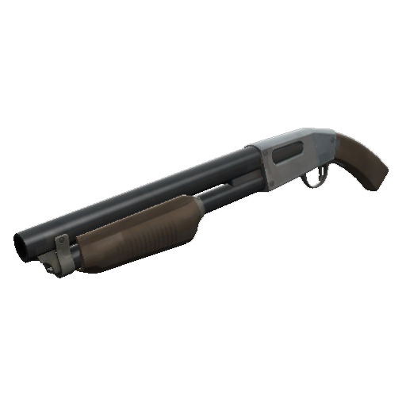

Primaries (The miniguns)
| Weapon | General Advice |
|---|---|

Minigun (Stock) |
Ol' Reliable. This is the minigun that is good in about any situation. |

Tomislav |
The most accurate of the miniguns, but also the slowest fire rate. When fighting against a heavy that is shooting at you, try to walk backwards, this will allow you to get more dps than they can (unless they too are using the tomislav) due the range you are creating benefits the tomislav because of it’s increase accuracy. Also remember to abuse the silent rev by staying in a corner revved to catch someone off guard. |
|
Brass Beast |
The minigun which you use if you just hate everyone. Generally you just hold a position and wait for people to walk into your line of sight to just kill them due to the bonus damage. While it is effective and can be hard to counter if the team plays it properly... you are still a sitting duck due to it promoting perma-revving. And since you move like a literal slug when revved you ain’t gonna dodge anything. |
|
Natascha |
The minigun if you just hate scouts specifically. While it might seem on paper to be a good starter minigun with the slow on hit and dmg resistance; it’s actually really hard to use due to the damage reduction it has, causing you to waste more ammo and time to take them out, which is not preferred. But it's still fun to make people mad by slowing them to a crawl. |
|
Huo-Long Heater |
Only use if being a cart heavy, planted near a dispenser, or your entire team is pyro. Also note people can easily counter the ring of fire around you but just jumping over because it is really tiny in height. |
| Total unique weapons listed: 5 | Total general advices listed: 5 |
Secondaries (Shotguns)
| Weapon | General Advice |
|---|---|
| 
Shotgun (Stock) |
The shotgun is a good stock weapon due to it allowing you to do damage while being more mobile (as much as heavy can be) comapred to revved up with you minigun and is a good backup option if your minigun runs out of ammo. The sandvich outclasses it due to it’s healing, but it’s still a fun option whether going shotgun only or to use it as a backup option. |
|
Family Business |
Best shotgun bar none for heavy. The increased attack speed and 2 extra loaded shells makes this the best (non-scout scattergun) shotgun in the game. |
|
Panic Attack |
Only use it as a secondary. Running it full-time as shotgun only is usually bad since it’s sole purpose to be quicker option to take out than the regular shotguns but punishes for prolonged use. |
| Total unique weapons listed: 3 | Total general advices listed: 3 |
Secondary (Food)
| Weapon | General Advice |
|---|---|
|
Sandvich |
The best heavy secondary to run in any circumstance, it is nearly a staple at this point for the heavy meta. You usually use it to heal a teammate that needs some healing while your medic is busy, healing the medic, or to use it for yourself if your med is busy and you need some healing. Note that if you are full health and any lunchbox item is on cooldown, you can pick up any healthpack to instantly get it back. |
|
Buffalo Steak Sandvich |
Can be good for rollouts when running to first mid fights on control point modes, but usually only good for cheese strat of using steak with fists of steel to attempt to get a med drop or force uber. |
|
Second Banana |
Use this over sandvich if the team has no medic or the medic doesn’t heal you. |
|
Dalokohs Bar |
This is not really a viable item, 50 health is not a lot so just don’t bother. |
| Total unique weapons listed: 4 | Total general advices listed: 4 |
Melee
| Weapon | General Advice |
|---|---|
|
Fists (Stock) |
The stock melee for heavy. The other fists provide some form of actual ultilty that can make the life for heavy more interesting but this can be good for it’s purpose of being a melee weapon. Note that the taunt kill it has is surprisngly one of the best in the game due to it’s range and how quick it is compared to others. |
|
Gloves of Running Urgently (GRU) |
The GRU is good for mobility, whether it be to get out of battle, get to the battle or do some fancy footwork in a fight to dodge damage. If you use these to go to a fight do be careful of how much health is taken from you when you have them out and remember to put them away when you are close to your destination so you get some health back. |
|
Fists of Steel (FoS) |
The FoS is made to allow heavy to tank a lot of damage. Pull them out when either running away or to stand in front of a teammate to take oncoming damage so they don’t take that damage and die. |
|
Eviction Notice |
Just bad and not worth using. It’s meant to be a melee fighting weapon yet punishes you for having it out by draining your health. |

Warrior's Spirit |
Can be fun but generally awful due to taking extra damage, making your effective health from 300 to 210. |
| Total unique weapons listed: 5 | Total general advices listed: 5 |